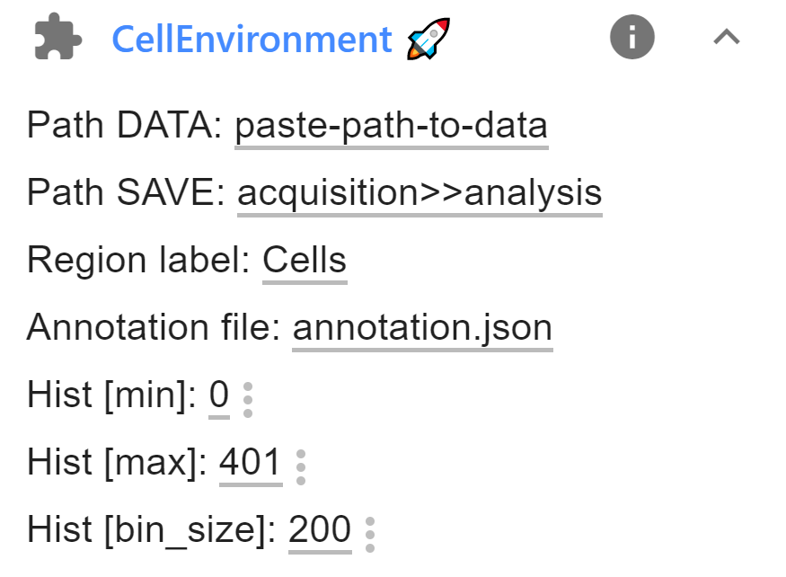

Cell environment¶
In this workflow, expression levels are measured in equi-distant zones around user-defined regions, e.g. cells.
As input the workflow requires:
- FISH-quant results file: positions of RNAs.
- ImJoy annotation files: positions of cells.
Summary of analysis workflow¶
For each RNA, the distance to every regions is calculated and the RNA is assigned to the closest region.
The user also defines the spacing of equi-distant zones around each region. For each region, the number of RNAs for each zone is computed. Additionally, the number of pixels in each zone, i.e. it's area is calculated. If required, this can be used to normalized the RNA counts, i.e. to to correct for the large size of regions that are are further away.
Required tools¶
FISH-quant for RNA detection¶
For more information, Please visit the dedicated section here.
ImJoy Plugins¶
These plugins have to be installed only once, after installation they will be
available in the dedicated ImJoy workspace: liver-rna-loc
When pressing on the links below, ImJoy will open in your browser (best in Chrome) and you will be asked to confirm the installation with a dialog as shown below. After confirmation, the plugin and additional auxiliary plugins will be installed.
-
ImageAnnotator: annotate your images. Install from here. -
CellEnvironment: calculate expression gradient. Install from here. Alternatively, you can also use the provided Jupyter notebook.

Jupyter notebook¶
To perform the calculation of the expression gradients, we also provide a Jupyter notebook cell_environment.ipynb, which can be found on GitHub in the folder notebooks.
Data¶
Data organisation¶
This workflow permits batch-processing of a large number of files, but requires a strict data-organization
- Top folder called
acquisition. - A subfolder for each experimental condition, i.e.
cond_1for the example data. - Each sample (usually a field of view) is in a separate folder, e.g. named
sample_1,sample_2, ... .Each sample folder can contain images of multiple channels. - FQ result files are in the same folder. A folder can contain multiple FQ results for different channels.
- An annotation file with the outlines cells (ending with
annotation.json). See below for more details.
In the example below, a folder contains the annotations (annotation.json),
two different channels (...green.tif, ...red.tif, ...blue.tif ), the FQ outline file (...outline.txt), the FQ results
for the red channels ...spots.txt, and an annotation file (annotation.json).
Please note that you can have only one annotation file per sample folder. You can create it by visualizing any of the channels, but the same annotations will be used for each FQ results file in this folder.
├─ data__cell_environment/
│ ├─ acquisition
│ │ ├─ cond_1
│ │ │ ├─ sample_1
│ │ │ │ ├─ sample_1_annotation.json
│ │ │ │ ├─ sample_1_red_spots.txt
│ │ │ │ ├─ sample_1_red_outline.txt
│ │ │ │ ├─ sample_1_green.tif
│ │ │ │ ├─ sample_1_red.tif
│ │ │ │ ├─ sample_1_blue.tif
│ │ │ ├─ sample_2
│ │ │ ├─ ...
│ │ ├─ cond_1
│ │ │ ├─ sample_1
│ │ │ ├─ ...
│ ├─ analysis
│ │ ├─ cond_1
│ │ │ ├─ sample_1
│ │ │ │ ├─ analysis__cell_env
│ │ │ │ │ ├─ sample_1_red_spots
│ │ │ │ │ │ ├─ histogram__PIX.csv
│ │ │ │ │ │ ├─ histogram__RNA.csv
│ │ │ │ │ │ ├─ histogram__RNA_norm.csv
│ │ │ │ │ │ ├─ per_region
│ │ │ │ │ │ │ ├─ hist__reg_0.png
│ │ │ │ │ │ │ ├─ ...
│ │ │ │ │ │ │ ├─ histogram__reg_0.csv
│ │ │ │ │ │ │ ├─ ...
│ │ ├─ ...
Demo data¶
You can find already processed demo data here.
The outline cells are macrophages, and have the label Mac.
TODO: upon publication, demo data will be moved to Zenodo.
Analysis workflow¶
1. RNA detection with FQ¶
For more details, please consult the dedicated section here.
2. Annotation of cells¶
For this workflow, all cells that should be analyze have to be manually annotated in ImJoy with one annotation
type. We recommend naming this annotation Cells, but other names can be used as well (but you have
to update the default value in the analysis scripts as described below).
For more details, please consult the dedicated section here.
3. Calculate density profiles¶
You can run this analysis either with the dedicated ImJoy plugin or the provided Jupyter notebook. In either case, you need to have a local installation of Python. For more information consult the dedicated section here.
4. Location to store results¶
The results will be saved in a dedicated folder analysis__cell_env. Here, a dedicated folder
for each spot detection result will be created and named with the name of the FQ results file.
Different options exist to define where this folder will be created:
- You can define an absolute path name. This path will be used to store the data.
- You can define a replacement operation where parts of the path name of the results, will be
replaced with another string. This is convenient when wanting to store the results in a different location than the raw data. Such a replacement operation is specified with a string where the
old_stringis separated by thenew_stringwith a>>, e.g. the stringacquisition>>analysisindicates that not a complete path is provided, but that a string in the provided data folder will be replaced. More specifically, the stringacquisitionwill be replaced byanalysis.
Analysis in ImJoy¶
If you use Imjoy, you need to install the Jupyter engine. The first installation might take a bit of time, since the necessary Python environments on the plugin engine are created.
Once installed, you will see in the plugin sidebar, where you can launch the analysis:

-
Paste the full name of the folder that should be processed. This folder will be recursively searched and each subfolder containing an annotation file will be processed.
-
If needed, change the analysis parameters (see Table below), and press on plugin name in blue to launch the analysis,
Option Type Default Description Path DATAstr Full path to folder that should be scanned for annotation files. PATH Savestr Where results should be saved (see above). Region labelstr CellsLabel of the annotated regions. Annotation filestr annotation.jsonName of the ImJoy annotation file. Hist [min]int 0 Minimum value of histogram to summarize enrichment (in pixel). Hist [max]int 300 Maximum value of histogram to summarize enrichment (in pixel). Hist [bin]int 50 Bin size (in pixel). -
The plugin will then analyse all sample folders containing an annotation file. Progress can be monitored in the plugin log, accessible via the
inext to the plugin name.
Progress is reported in the plugin log (accessible with the 'i' symbol next to the plugin name) and the ImJoy progress bar.
With Jupyter notebook¶
Once you have your conda environment installed as described in the Overview section,
you can open the Jupyter notebook (cell_environment.ipynb, which can be found on
GitHub in the folder notebooks.
You have to execute the first cell to import the analysis package.
The second cell allows you to
- Define the folder containing your data.
- Defining the parameters described above for the analysis.
Executing the cell, will launch the analysis workflow as described above.
4. Generated result files¶
The function will create a number of result files, which are stored in the
subfolder analysis__cell_env. For each FQ result file, a separate subfolder
with name of this file is created. In this folder the different histograms are
summarized:
-
histogram__PIX.csv. Contains PIXEL histograms for all regions, e.g. number of pixels in the defined equi-distant zones around the regions. These values are used for renormalization. First column is the center of histogram bin (in pixel). -
histogram__RNA.csv. Contains RNA counts per equi-distant zone for all regions. -
histogram__RNA_norm.csv. Contains renormalized RNA counts per equi-distant zone for all regions.
In this folder, results for each region are stored Results files have the full name of the FQ file with the following prefixes
-
histogram__reg_i.csv, histograms for regioni. Contains the spatial expression gradient as a table:- 1st col: center of histogram bins (in pixel).
- 2nd col: RNA counts
- 3rd col: Pixel counts
- 4th col: Normalize counts.
-
histogram_summary__reg_i.png, summary image of for regioni. First row shows smFISH image, mask of region, distance transform (distance from region). Second row shows the raw histograms for RNAs and pixels, as well as the renormalized histogram.